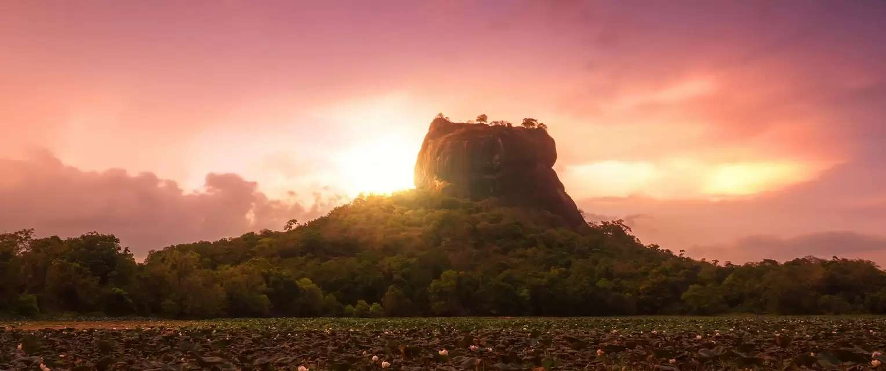
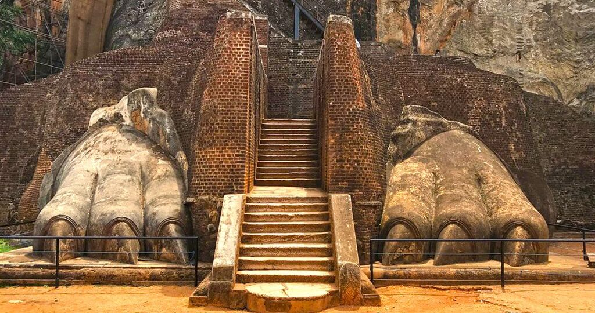

The Legend & History
Sigiriya is one of Sri Lanka’s most iconic landmarks, rising nearly 200 meters above the surrounding plains. Built in the 5th century CE by King Kashyapa, this extraordinary rock fortress served as a royal palace born from fear, ambition, and betrayal. After seizing the throne from his father, Kashyapa constructed his palace atop the rock to protect himself from enemies. The site later became a Buddhist monastery and eventually earned recognition as a UNESCO World Heritage Site.
Key Features to Highlight
- The Frescoes: Ancient paintings of "Cloud Maidens" still retaining vibrant color.
- The Mirror Wall: Polished wall covered with centuries-old graffiti.
- The Lion Gate: Massive stone paws marking the entrance to the summit.
- The Water Gardens: One of the world’s oldest functioning landscaped gardens.


Quick Facts for Travelers
- Best Time to Visit: Early morning (around 7:00 AM).
- Climb Difficulty: ~1,200 steps; moderate fitness required.
- Highlight: 360-degree panoramic views from the summit.